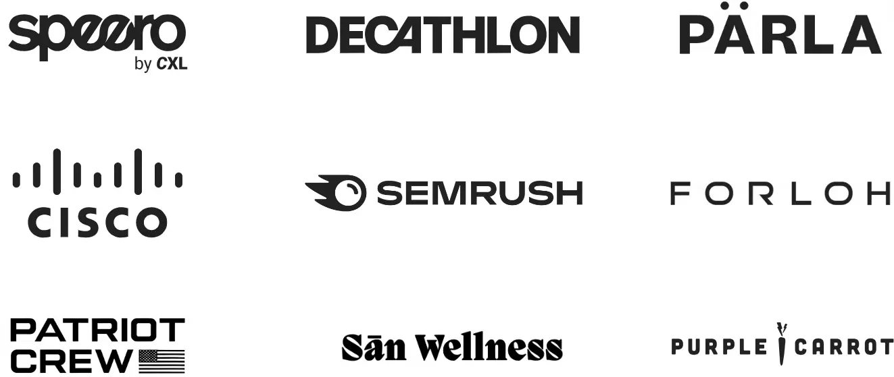
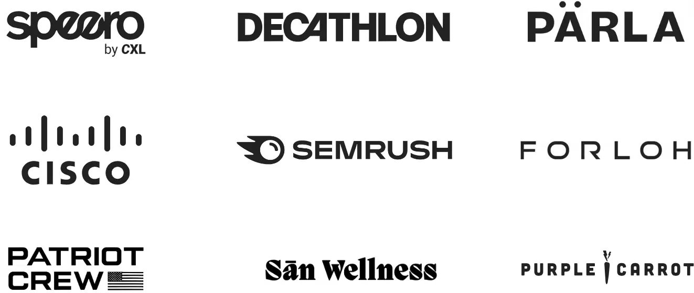

Hi! I am Devansh.
I've been working as an independent CRO consultant for the past 5 years & have worked on projects with Fortune 100 Companies, $50m+ ARR e-com brands and tons of early-stage startups.
Some of the companies I have worked with:
 

Here's why you should hire me:
Diverse Experience
Working as an independent CRO Consultant at 7+ agencies gave me the chance to work with orgs of all sizes & understand what testing strategy works for what business size. This means I can deliver results regardless of your company size.
Wide Skillset
I can do the regular CRO work (Research, Experiment Design & Analysis) but I can also analyze data beyond traditional A/B testing, create custom in-house softwares (+ automations) for your specific operational needs and do B2B sales. Click here to see use cases.
Extra Work Hours
I have no wife and no kids. I don’t have any family obligations. This means I have all the time in the world to work more on my optimization projects.
My main areas of consulting:
UX & Experimentation
Includes quantiative and qualitative research, experiment recommendations, test prioritization charts, post-test analysis and pretty slide decks.
Research Methods Used: Analytics Audits, Scrollmap & Clickmap Analysis, Surveys (Pre-Purchase, Post-Purchase, Post-Use, Post-Churn), Usability Tests, Copy Tests, Chat Log Analysis, Heuristic Analysis & many more.
Differentiation
Most D2C Brands & Tech Companies suck at differentiating themselves. They sound just like their damn competitors. This is not ideal when aiming to capture a greater market share.
I have made my very own differentiation framework to help orgs in saturated markets to position themselves differently & scale fast. You can click the button below to see my thought process on differentiation and how I will be executing this this service.
What industry leaders & past clients have to say about me
"What I love about D the most is he is so willing to challenge the status quo and is what I call a leading thought leader in digital"
- Zack Hamilton, CX @ Forsta
Former Advisor to Walmart, Lego, Petco
"Devansh's insights & recommendations were incredibly useful for our company & our clients. He did his job very well but didn't stop there. He volunteered to take on additional roles & help our agency grow. He's a true gem"
- Shane James, MD @ Raani Consulting
Managed $25m in ad spend.
"We personally feel that Devansh hits it out of the park when it comes to brand differentiation and brand marketing optimization for the DTC space"
- Convert.com, A/B Testing Platform
Used by Sony, Audi, Manscaped
Frequently Asked Questions
I am based in the UK & I'm currently living in India. However, I work fully remotely. My usual time zones for work are BST, EST and PST.
I mostly work on contract basis but I am fully open to full-time roles at agencies, e-commerce brands & tech firms!
Yes, I have multiple certifications from CXL & I have also worked at CXL's agency (Speero) as a CRO Consultant.
Below are the use cases of each skillset:
1. The Statistician Skillset:I have a formal background in statistics. This means I can analyse data beyond traditional A/B Testing. This includes i) identifying causality via Regression Discontinuity, Interrupted Time Series Analysis and other methods, ii) analyzing complex data sets to find correlations and iii) creating models to make predictions.
2. The Programmer Skillset: Regular automation tools cost alot of money. But since I know programming with Python, I can create automations (without having to pay for expensive tools).
3. The Sales Skillset: This one is more useful for agencies who are interested in hiring me. I have ran my own agency, posted content, sent cold-emails, generated leads, closed deals and even helped other agencies do the same. So, I can pretty much do the same for your agency.
Below is a short list of tools I use on a daily basis. However, if a project requires me to learn a new one, then I can do that within a couple of hours.
A/B Testing: Optimizely, VWO, Convert
Project Management: ClickUp, Trello, Airtable
User Research & Analytics: Google Analytics, Heap, Hotjar, UsabilityHub, Typeform, Wynter
Programming & Frontend Development: Python, HTML, CSS
You can message me on LinkedIn by clicking here or you can email me at dev@devanshconsulting.com or you can book a short 15-minute call by clicking here.